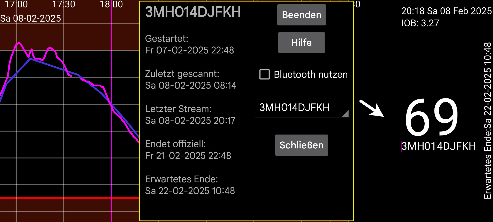

Gibt Auskunft über die Sensoren, wenn Juggluco als Klon der Streamwerte fungiert:
Gestartet: Zeitpunkt, zu dem der Sensor gestartet wurde. Bei Libre-Sensoren ist dies eine Stunde vor den ersten Glukosewerten.
Zuletzt gescannt: Zeitpunkt des letzten Scannens des Sensors. Auch wenn der Sensor aufgrund eines Sensorfehlers oder eines Sensoraustauschfehlers gescannt wird, ohne Daten zu empfangen, wird dies als gescannt gezählt.
Letzter Stream: Zeitstempel der letzten über Bluetooth empfangenen Glukosemessung;
Endet offiziell: Endzeit laut Angabe des Sensorherstellers.
Erwartetes Ende: Einige Sensoren halten in Wirklichkeit länger als die offizielle Endzeit. Libre 1 und 2 und Dexcom G7/ONE+ halten 12 Stunden länger, Sibionics-Sensoren halten fast 10 Tage länger. Nur Libre 3-Sensoren halten nicht länger als ihre offizielle Endzeit.
Beenden: Beenden Sie den Empfang von Glukosewerten über Bluetooth von diesem Sensor. Wenn Sie ihn wieder verwenden möchten, müssen Sie den Sensor erneut scannen.
Bluetooth nutzen: Verbinde dieses Gerät direkt per Bluetooth mit den Sensoren. Damit kannst du ändern, welches Gerät direkt mit den Sensoren verbunden wird. Bei dem anderen Gerät, das zuvor direkt mit dem Sensor verbunden war, sollte es ausgeschaltet sein. Außerdem musst du die Klon-Einstellungen auf beiden Geräten ändern, damit Stream- Werte in die entgegengesetzte Richtung gesendet werden. Wenn es sich bei der anderen Seite um eine WearOS-Uhr handelt, kannst du dies mit einer einzigen Taste tun: Linkes Menü → Uhren → WearOS-Konfigurieren → „Direkte Sensor-Uhr-Verbindung“.
Wenn Sie verschiedene Sensoren verwenden, können Sie auswählen, für welchen Sensor Informationen angezeigt werden sollen.